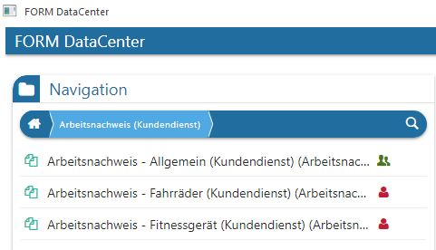
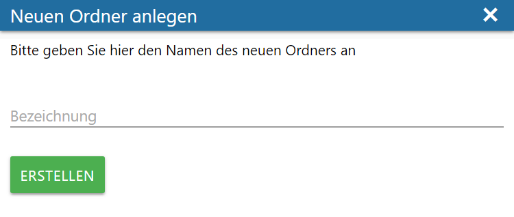
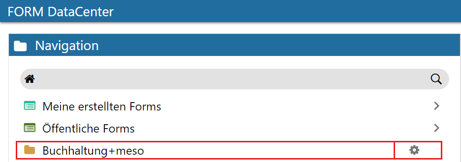
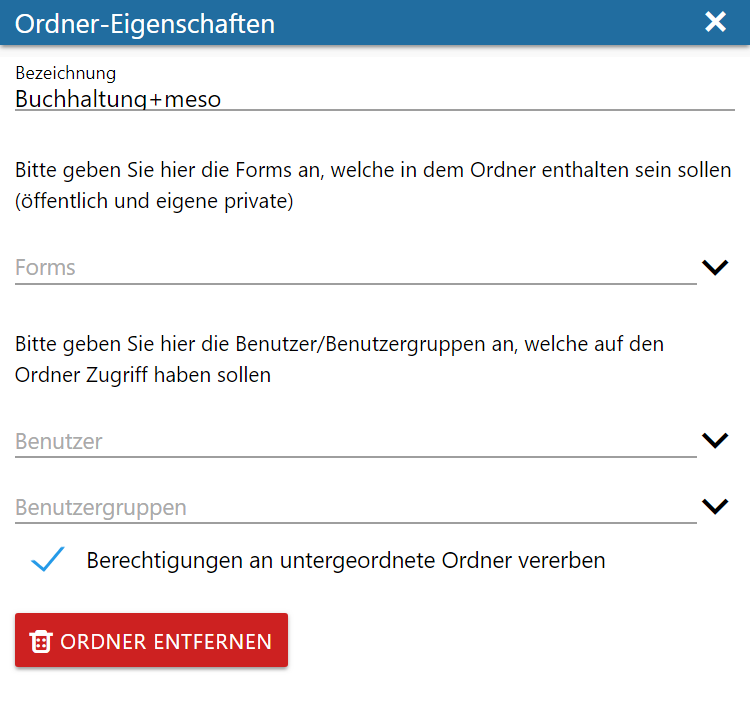
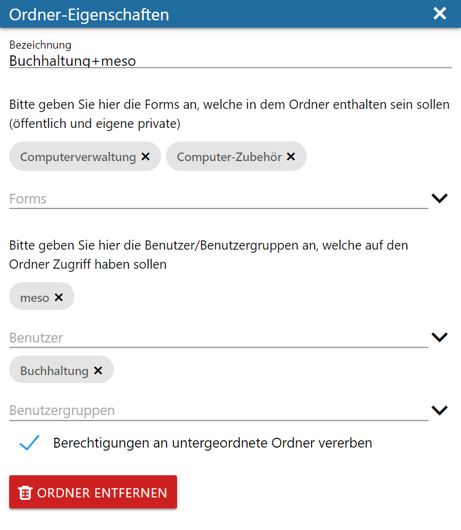
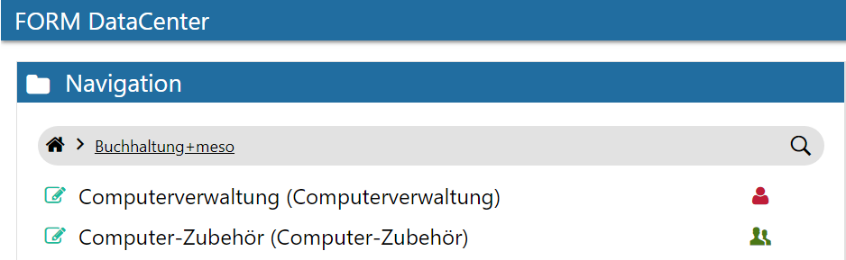

FORM-Formulare können im DataCenter entweder mittels roten Personen-Symbol für alle öffentlich bzw. über eine Ordner-Struktur für bestimmte Benutzer/Benutzergruppen freigegeben werden.
Freigabe von FORM-Formularen für alle: (öffentlich stellen)

Nach Anwahl dieses Symbol, wird daraus ein grünes Personen-Symbol und das FORM-Formular befindet sich anschließend im Bereich "Öffentliche Forms".
Anschließend ist dieses FORM-Formular für alle Benutzer im Menüpunkt "DataCenter" sichtbar, kann somit angewählt und Erfassungen durchgeführt werden.
Freigabe von FORM-Formularen mittels Ordner-Struktur:
Wenn ein FORM-Formular nicht für alle, sondern für einzelne Benutzer bzw. Benutzergruppen freigegeben werden soll, dann muss zuerst mittels Ribbon-Button "Neuer Ordner" ein Ordner erstellt werden:

Ø Bezeichnung
Es muss eine Bezeichnung für den neuen Ordner angegeben und der Button "Erstellen" angewählt werden.
Der angelegte Ordner ist anschließend im Bereich "Navigation" ersichtlich:

Mit der Anwahl des Zahnrad-Symbols in der Zeile des erstellten Ordners können weitere Einstellungen angegeben werden:

Ø Forms
In diesem Feld können die für diesen Ordner zu freigebenden FORM-Formulare ausgewählt werden. Wenn eine Eingabe von Zeichen erfolgt, wird eine Autovervollständigung die vorhandenen FORM-Formulare zur Auswahl stellen. Eine Mehrfachauswahl ist möglich.
Ø Benutzer
Hier können die Benutzer, welche die darüber angegebenen FORM-Formulare ausfüllen können sollen, angegeben werden. Wenn eine Eingabe von Zeichen erfolgt, wird eine Autovervollständigung die Benutzer zur Auswahl stellen. Eine Mehrfachauswahl ist möglich.
Ø Benutzergruppen
Hier können die Benutzergruppen, welche die darüber angegebenen FORM-Formulare ausfüllen können sollen, angegeben werden. Wenn eine Eingabe von Zeichen erfolgt, wird eine Autovervollständigung die Benutzergruppen zur Auswahl stellen. Eine Mehrfachauswahl ist möglich.
Ø Berechtigung an untergeordnete Ordner vererben
Wenn diese Option aktiviert ist, werden die angegebenen berechtigten Benutzer/Benutzergruppen and eventuell erstellte Unterordner mitvererbt. Wenn für jeden Unterordner eine eigene Berechtigung vergeben werden soll, dann muss diese Option deaktiviert werden.
Hinweis
Innerhalb eines Ordners können weitere Ordner angelegt werden.
Wenn die Eingaben fertig gestellt wurden, kann das Fenster mittels X geschlossen werden, da die Eingaben sofort zurückgeschrieben werden. FORM-Formulare können mehrfach in verschiedenen Ordnern freigegeben werden.
Beispiel - Ordner-Eigenschaften

Wenn der Ordner anschließend im Bereich "Navigation" angewählt wird, sollten die angegebenen FORM-Formulare für die angegebenen Benutzer/Benutzergruppen ersichtlich sein:
